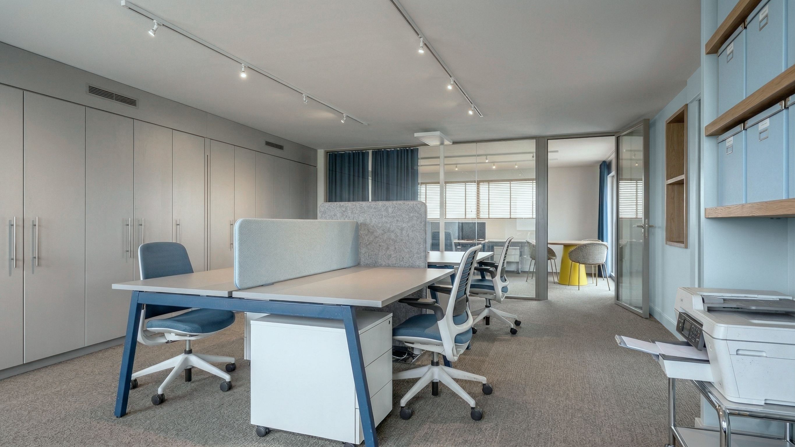
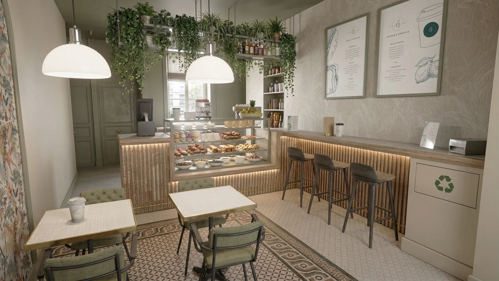

Vos locaux sont un levier d'image et de performance : mal pensés, ils freinent votre activité, bien conçus, ils attirent, fidélisent et rendent vos équipes plus efficaces.
J'accompagne les dirigeants, commerçants et entrepreneurs dans la transformation de leurs espaces professionnels. De la conception à la réalisation, chaque décision est guidée par vos ambitions et objectifs : fonctionnalité, identité et rentabilité.
Je conçois et sécurise votre projet : plans et visuels 3d, déclarations administratives, conformité normes ERP, sécurité et accessibilité, chiffrage et mise en relation avec des artisans qualifiés.
L'esthétique devient un outil de différenciation, la fonctionnalité un levier d'efficacité et l'identité le fil conducteur qui donne du sens à chaque espace.
Implanté à Redon, j'interviens plus largement dans le Morbihan et Loire-Atlantique notamment Vannes, Sarzeau, Muzillac et Guérande.






Votre entreprise évolue, mais vos espaces restent figés.
Les équipes qui composent avec un lieu qui ne suit plus, les circulations sont peu fluides et des mètres carrés restent sous-exploités.
Je transforme vos locaux en un véritable outil de performance.
Chaque espace est pensé pour soutenir votre activité : fluidifier les échanges, améliorer le confort de travail, structurer les usages et renforcer la cohérence globale de votre image.
Je ne me contente pas de “réaménager.
J'aligne vos espaces avec votre stratégie : des équipes plus engagées, un quotidien plus fluide, une image professionnelle affirmée et un investissement qui prend de la valeur, sans désorganiser votre activité.

Vous ne souhaitez pas seulement rénover un espace mais plutôt créer une expérience. Vous avez une intention forte et vous savez que tout se joue dès les premières secondes.
Je vous accompagne pour donner forme à cette vision et en faire un lieu cohérent, lisible et mémorable.
Ambiance, matériaux, lumière, mobilier, parcours client... chaque choix est pensé pour raconter votre histoire et servir votre positionnement.
Je traduis votre idée en un concept solide, différenciant et exploitable.
Je sécurise le cadre technique et réglementaire pour que votre projet avance sans friction.
Un lieu qui marque, qui attire naturellement, qui fidélise et une identité forte pour se décliner, évoluer et soutenir votre développement.

Je vous accompagne à chaque étape du projet : de la première visite jusqu’à la livraison, en passant par la conception, les démarches administratives, le choix des matériaux et le suivi des travaux.
Je structure, j’anticipe, je coordonne pour que vous puissiez avancer sereinement, avec une vision claire et des décisions assumées.
Chaque projet est conçu dans sa globalité et rien n’est laissé au hasard. Un projet maîtrisé dans les moindres détails… et surtout, la certitude d’un résultat fidèle à ce que vous avez imaginé.

Adaptées à vos besoins
Vous souhaitez créer une identité forte adaptée à votre usage professionnel
- Analyse de votre activité et vos enjeux
- Plans d'aménagements optimisés
- Visuels 3d réalistes et immersifs
- Création d'une ambiance sur mesure
- Sélection des matériaux et couleurs
- Sélection de mobilier, luminaires et éléments décoratifs. Fourniture possible.
Structure de la phase travaux, sans pilotage de chantier.
Je vous accompagne sur place dans les RV artisans et la relecture des devis.
- Dessin de l'ensemble des plans détaillés
- Dossier technique complet
- Réunion pré-chantier sur place avec les artisans
- Relecture des devis et optimisation
Vous souhaitez déléguer et faire avancer votre projet sereinement
En complément de la mission conception + plans :
- Suivi des travaux
- Planning des travaux
- Coordination des intervenants
- Visites de chantier régulières
- Comptes rendus réguliers
Je constitue et dépose les demandes pour gagner du temps et sécuriser l'ouverture.
Accompagnement sécurité incendie et accessibilité PMR
- Analyse des contraintes PLU
- Rédaction des plans réglementaires
- CERFA complété
- Accompagnement au dépôt en mairie
- Suivi et ajustement pour obtenir les autorisations rapidement


Alexandre a travaillé sur un projet pour ma boutique, ce fut une pépite, depuis son travail ça a été une source d'inspiration pour faire avancer le projet et améliorer le design de nos autres boutiques !
Hâte de le lancer sur un projet complet !

L'agence VESTA a pu collaborer pendant deux années avec Alexandre.
Créativité, technicité et organisation sont ses mots d'ordre.
Nous vous recommandons Alexandre sans aucune hésitation !!!

J'ai récemment eu le plaisir de travailler avec Alexandre Cousseau pour l'aménagement de mon stand professionnel lors des salons, et je ne peux que le recommander chaudement.
Alexandre a su comprendre mes besoins et mes attentes dès le 1er échange. Son sens du détail et sa créativité ont transformé mon idée en un projet magnifique et fonctionnel.
[...]
Merci encore pour ce superbe travail !